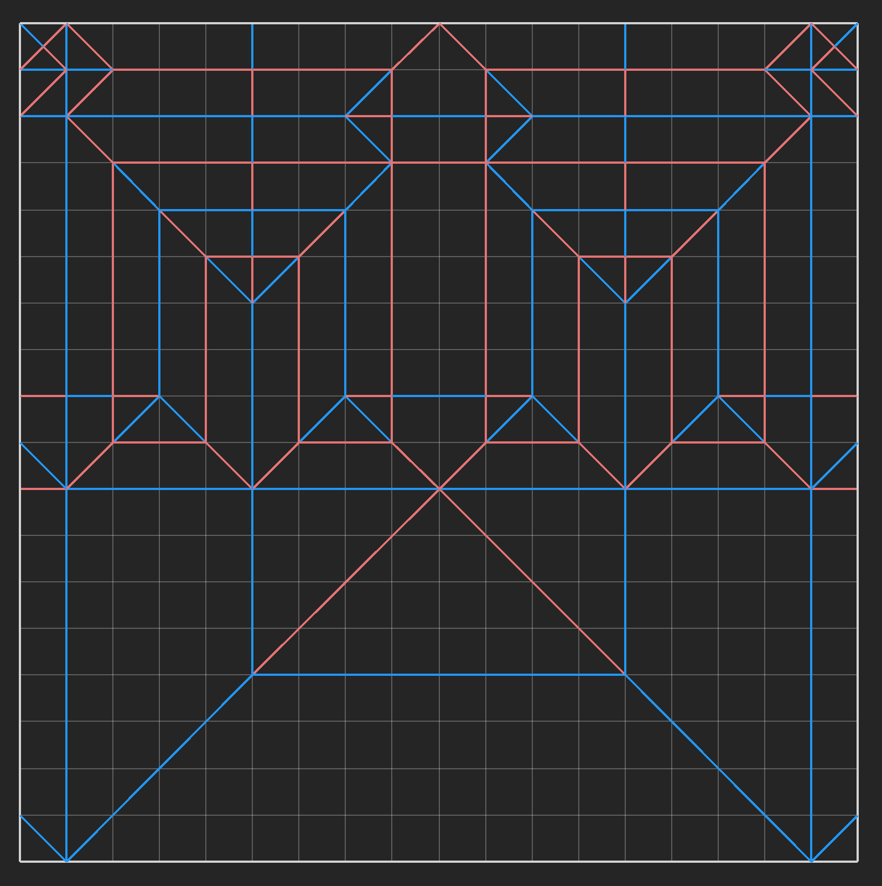
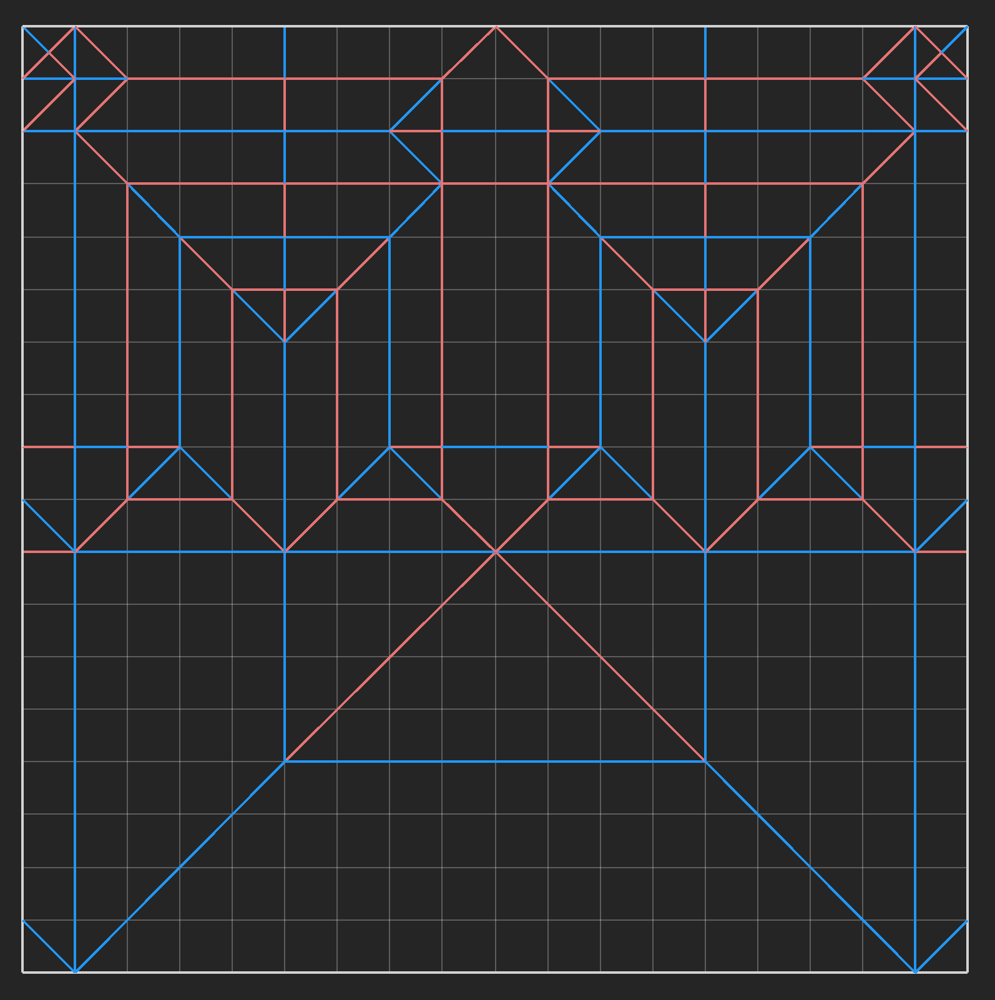
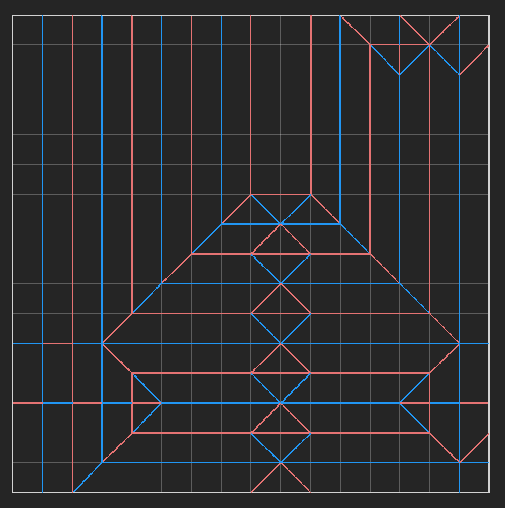
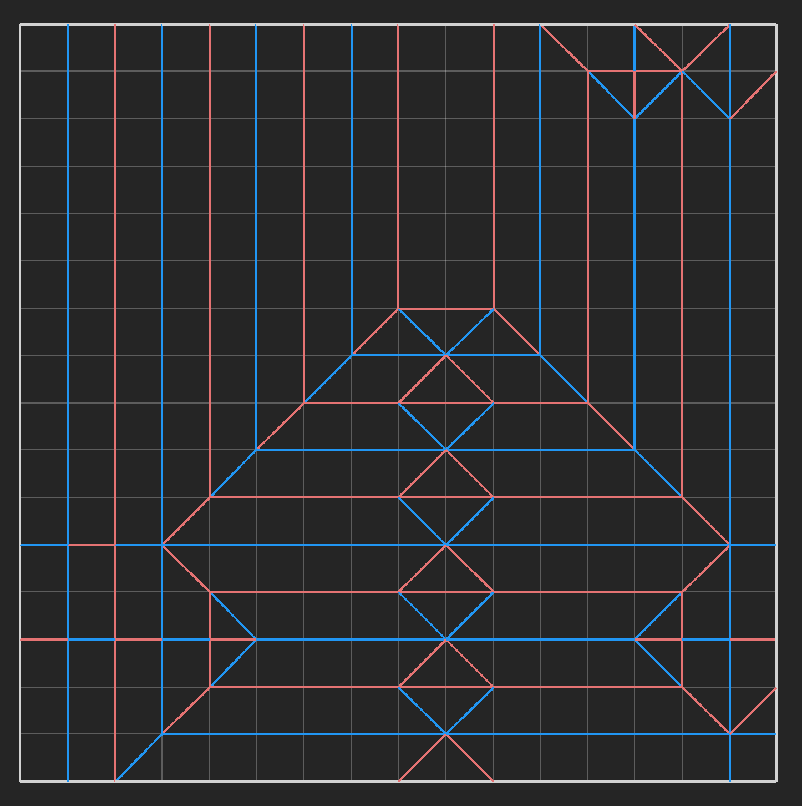
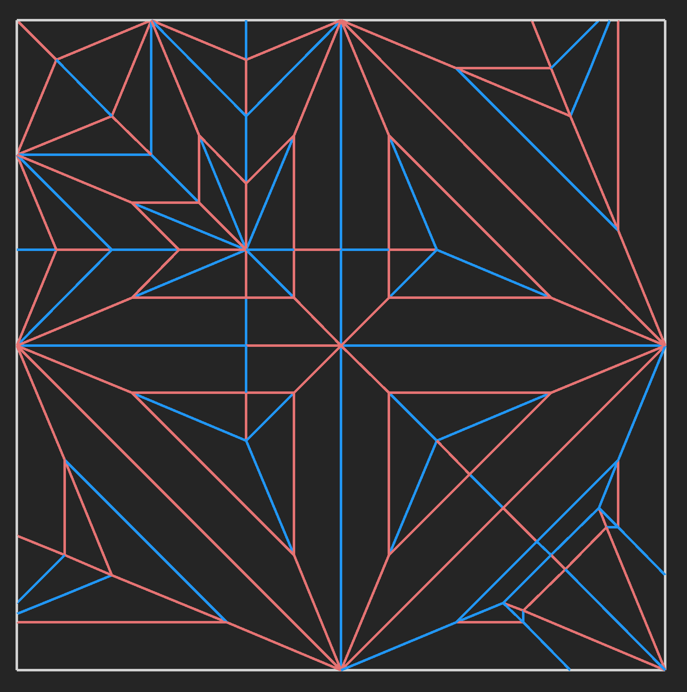
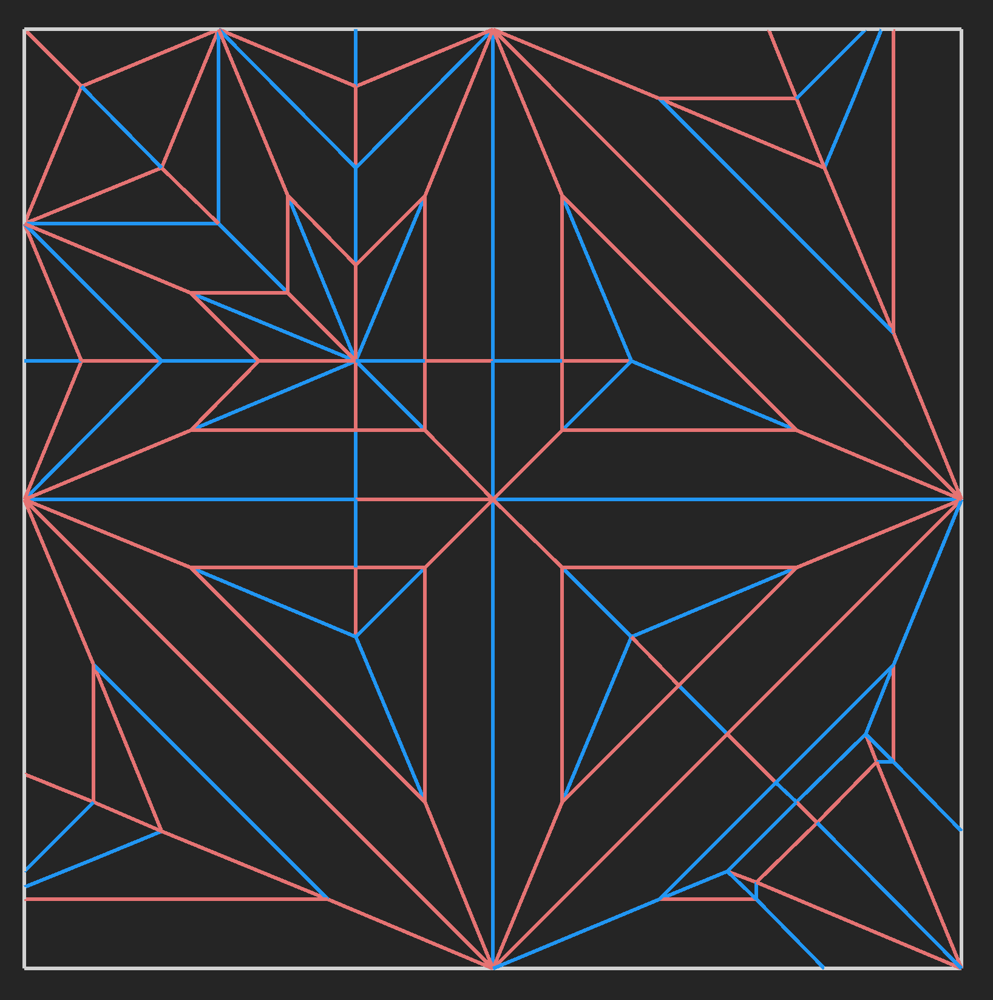
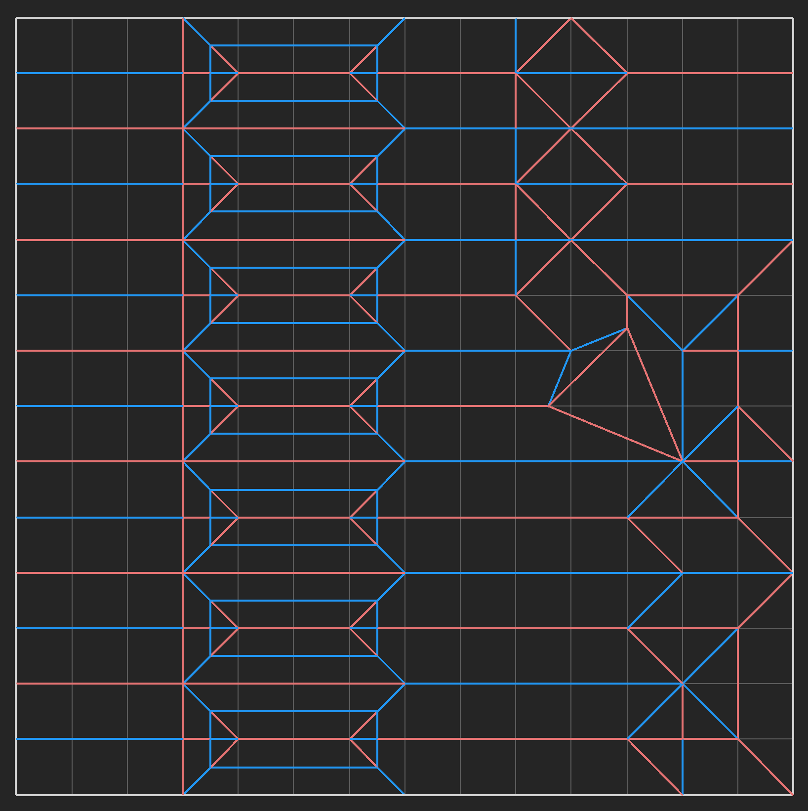
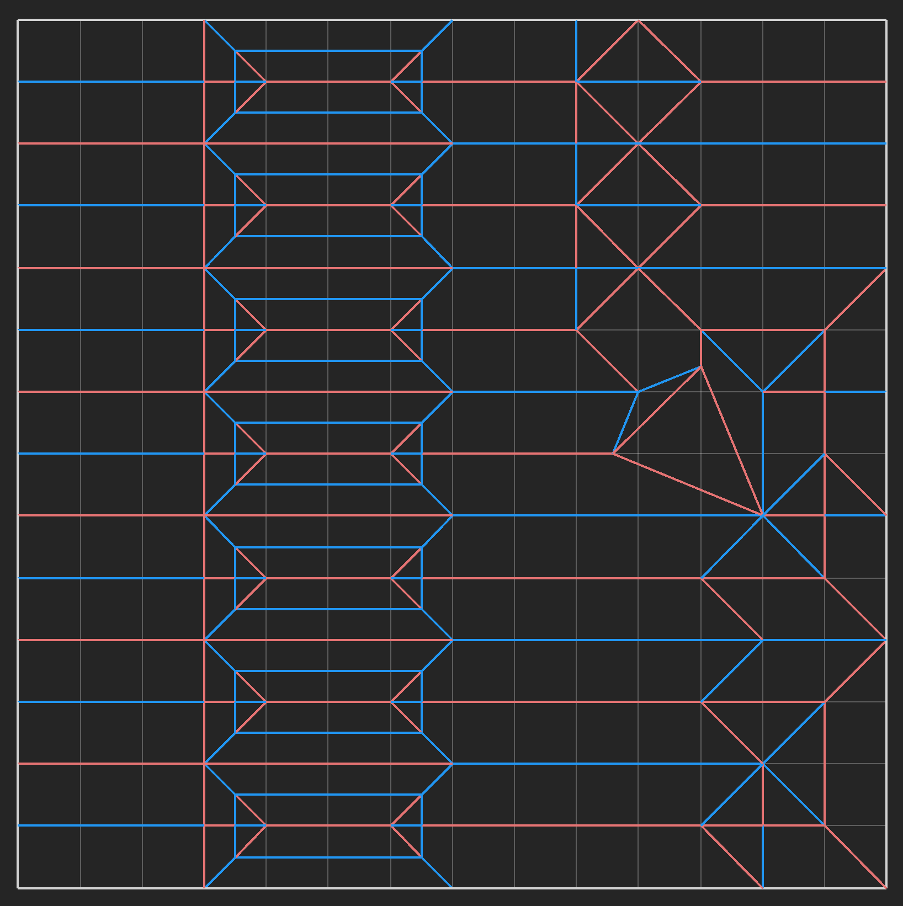
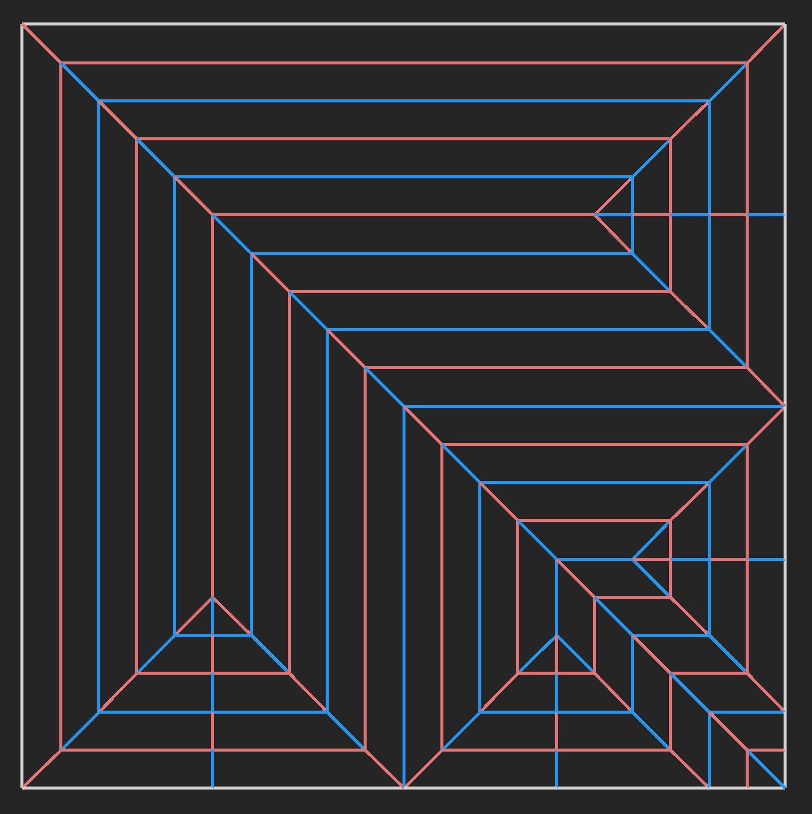
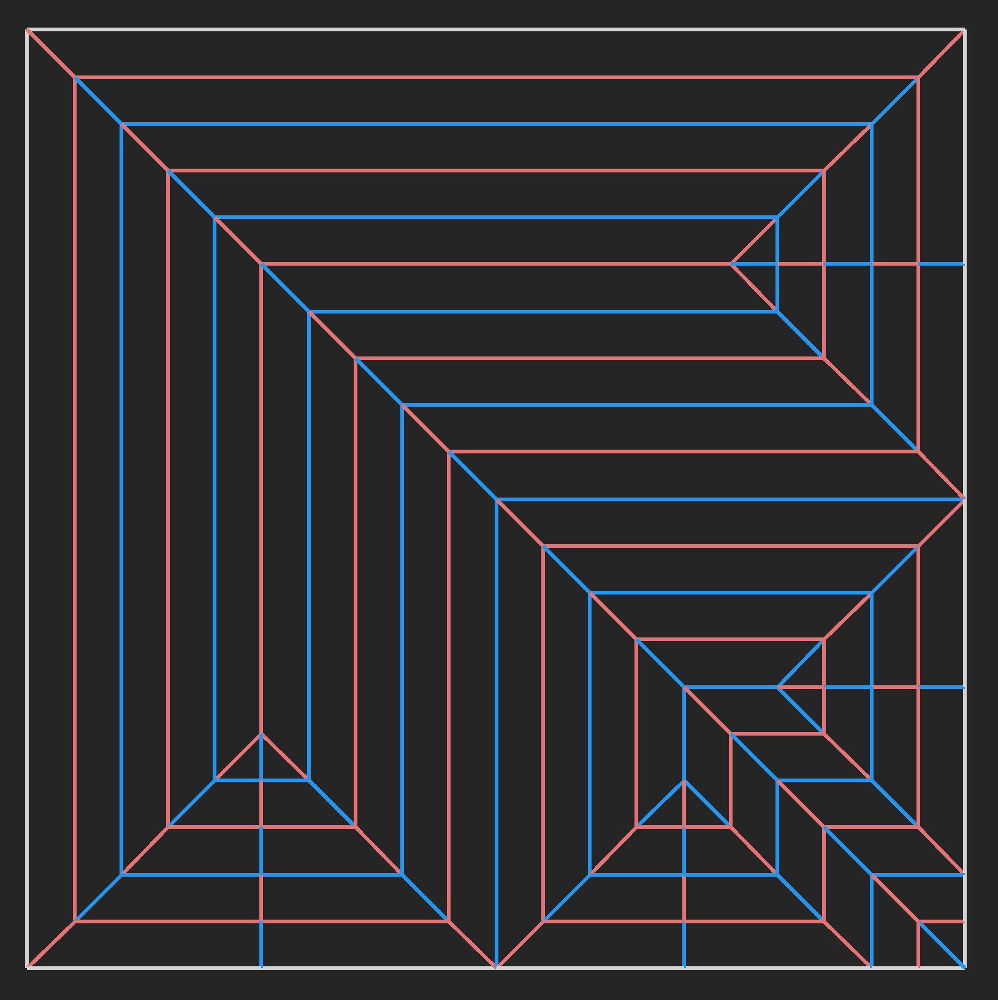

I am a Chicago based origami artist. I create figurative models, often incorporating multiple subjects into a single piece. Everything here is from a single sheet of paper, no cuts.
Please contact me before distributing or teaching any of my works.
Index
Walking Red Flag
Hanging up the Mask
Ship in a Bottle
Sky’s the Limit
Sinking Feeling
Stargazing
Whitetail Fawn
Fish out of Water
Hanging by a Thread
Walking Red Flag
Some things are better left avoided, and if you're lucky, they'll tell you to stay away. Most of this model is pretty straightforward to fold, except for the arm holding a smaller red flag.
Designed: 07/17/25
Hanging up the Mask
Comedy never looked so tragic. On a related note, properly shaping this model is a nightmare, probably because I'm bad at masks.
Designed: 06/28/25


Ship in a Bottle
Sometimes, I can still see that ship braving the ocean waves. I suppose it's technically only half a bottle, but if I made the whole bottle, then you wouldn't be able to see the ship.
Designed: 06/02/25


Sky's the Limit
In series with Sinking Feeling, this is meta origami with a non-standard model. Also, yes, it does fly.
Designed: 05/10/25

Sinking Feeling
In series with Sky's the Limit. Meta origami models are so fun, but they typically focus on cranes or blank pieces of paper. There are very few models that incorporate the traditional boat, so I designed a model that had two.
Designed: 09/20/24
 

Stargazing
Alternate title: the universe observing itself. Origami seems like a fitting medium for this idea, since both the observer (telescope) and the universe (night sky) are folded from the same sheet of paper.
Designed: 09/06/24
 

Whitetail Fawn
Designed as a celebration of the past summer, I took a slight departure from my previous subjects and paradigms. The result is this simple baby deer.
Designed: 08/18/24
 

Fish out of Water
A bit of an absurdist take on the phrase, I wanted to use my humanoid design skills to make the fish vaguely anthropomorphic. The umbrella uses a similar structure to the one in "Walking in the Rain" by Chen Xiao.
Designed: 08/14/24
 

Hanging by a Thread
Won the July 2024 Origami-Dan design contest. To some degree, I was inspired by Banksy's "Girl with Balloon", which informed my color choice in the final fold.
Designed: 07/24/24
 

These are just my most recent works. Older ones can be found here.